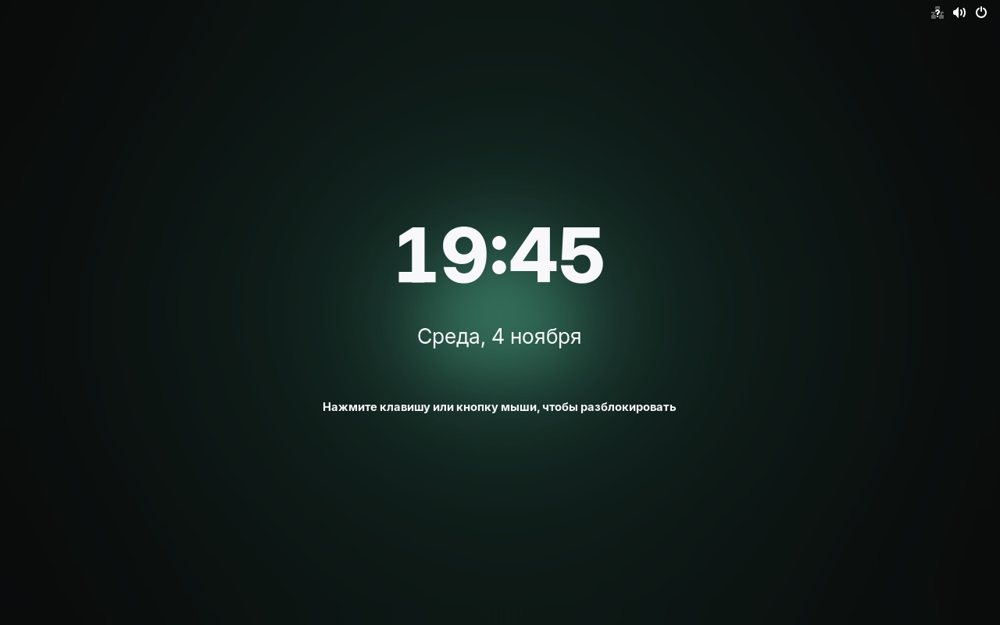
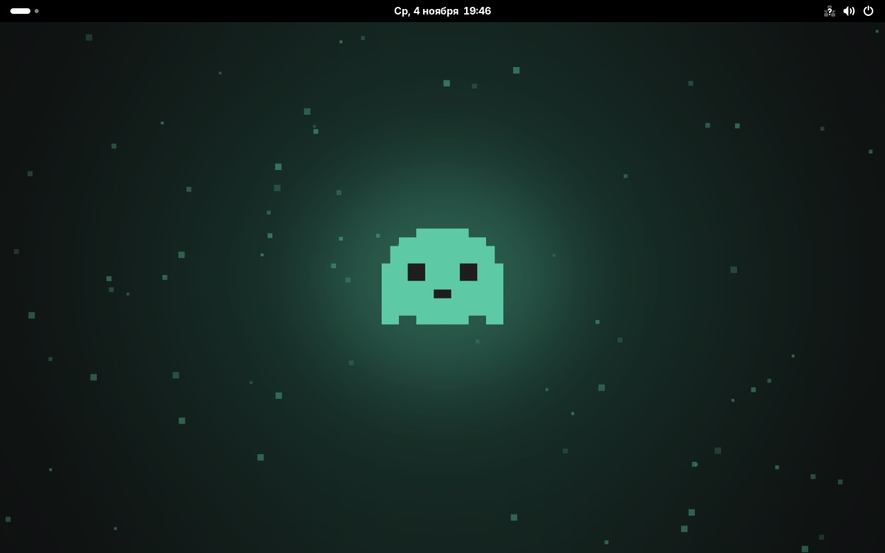
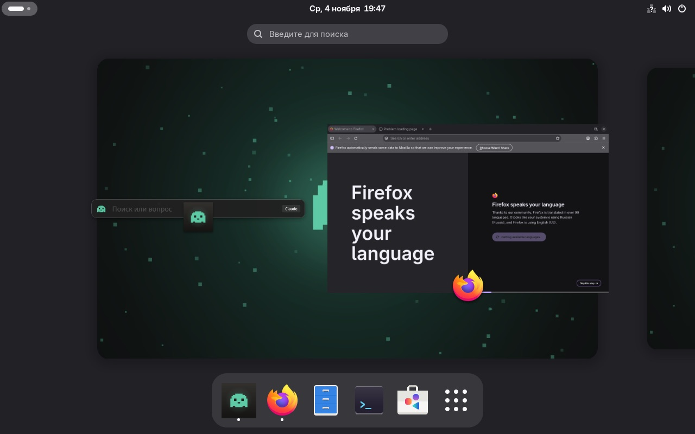

Lumi OS
Linux, в котором Lumi живёт с первой минуты. Включили компьютер, нажали Ctrl+Пробел и спросили. Ничего не нужно ставить и настраивать.
Экран блокировки с призраком
Свои обои, тёмная тема и бирюзовый акцент с первого включения
Чистый рабочий стол
Без логотипов и лишних значков. Lumi уже запущена и ждёт в фоне
Ctrl+Пробел, и Lumi здесь
Программы, файлы и вопросы к ИИ в одной строке. Ничего не нужно настраивать
Lumi первая в доке
Рядом Firefox, Файлы, Терминал и магазин приложений




Обычный Linux.
Только с Lumi внутри.
Lumi уже стоит
Запускается при входе. При первом входе открывается приветствие, где нейросеть без интернета ставится одной кнопкой.
Ctrl+Пробел сразу
Клавиша назначена заранее, строка открывается поверх любого окна.
Поиск файлов
Индекс файлов обновляется каждый день, поэтому Lumi находит их по имени.
Обновления с откатом
Система обновляется целиком, как один образ. Если что-то сломалось, прошлую версию можно выбрать при загрузке.
Пересборка каждый день
Свежая Fedora и новые версии Lumi приходят сами, без ручных обновлений.
Первая настройка короче
Часовой пояс ставится сам, раскладки английская и русская уже добавлены.
Две команды.
Или с нуля.
Уже на Fedora Atomic
Silverblue, Bluefin, Bazzite или Aurora переключаются на Lumi OS двумя командами. Ваши файлы остаются на месте.
$ sudo bootc switch ghcr.io/alberts15/lumi-os:latest $ systemctl reboot
Вернуться назад: выберите прошлую запись в меню загрузки или переключитесь обратно командой sudo bootc switch на ваш прежний образ.
С нуля, с флешки
Установщик для компьютеров с Intel или AMD, около 3,9 ГБ. Аккаунт на GitHub не нужен.
- Откройте последний релиз Lumi OS
- Скачайте все части ISO и SHA256SUMS в одну папку и склейте их, как написано в релизе
- Запишите ISO на флешку, например через Fedora Media Writer или balenaEtcher
- Загрузитесь с флешки и следуйте установщику